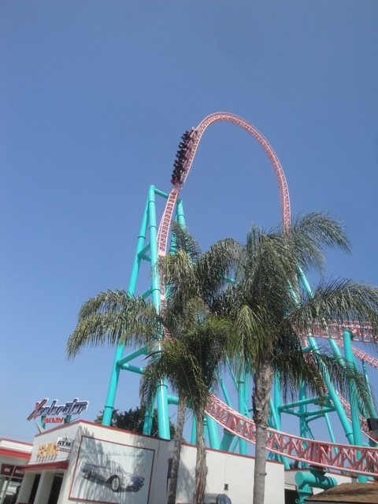
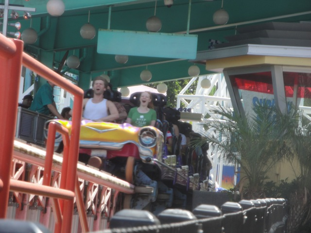
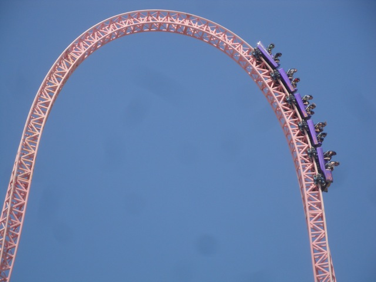
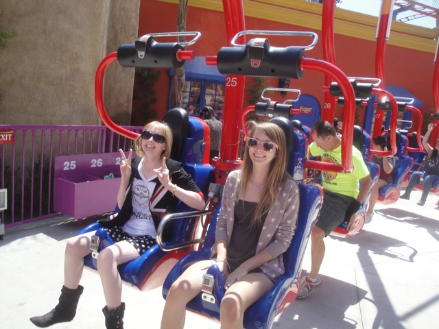
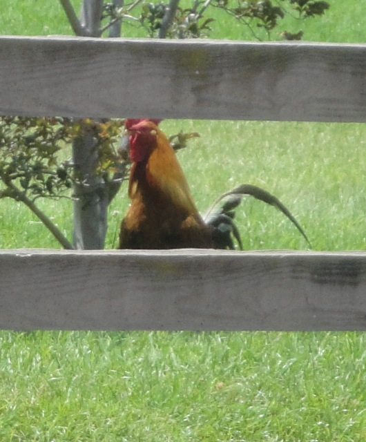
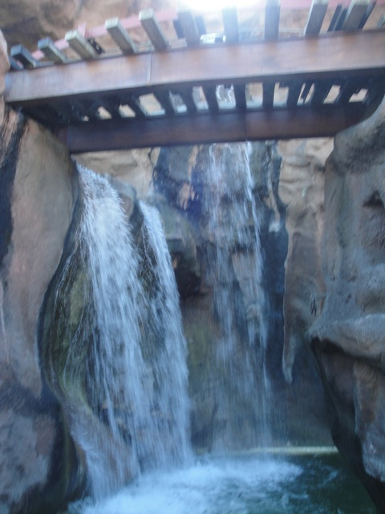
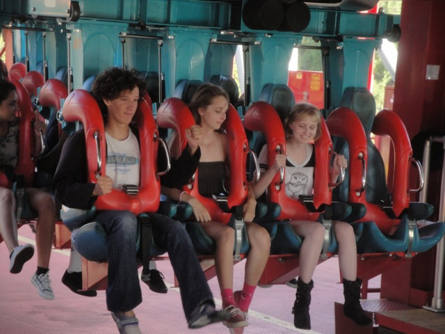
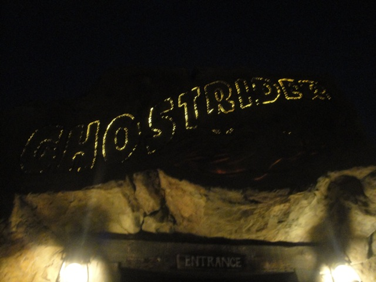

Knotts Summer 2012

All right. We decided to head on over to Knotts Berry Farm to head over there for a day of summer. And yeah, lets start out by marathoning Xcelerator.

Still love that launch to death.

Luckily, I was able to marathon Xcelerator by just grabbing empty seats. So yeah. That was awesome.
 Yeah. This morning is already awesome.
Yeah. This morning is already awesome.
 Umm, after constantly riding Lex Luthor over and over again, this thing is truely pathetic.
Umm, after constantly riding Lex Luthor over and over again, this thing is truely pathetic.
Yeah. This is the proper way to ride the Chairswings. =)
Alisa and Kara both have a fear of heights. So we decided to take them on Windseeker.
Still trying to find the god damn wind.

"Hey!!! I thought this was suppossed to be scary!!! What the hell!!?"
MUSH KITTY!!!!! MUSH!!!!!!
BURN IT!!!! BURN IT WITH FIRE!!!!!
Oh look. You can get a job here. We clearly aren't in Ventura anymore.
OH MY GOD!!!! YES!!! YES!!!! YES!!!! EPIC HELL YES!!!! FREESTYLE MACHINE HAS COME TO FUDDRUCKERS!!!! THIS IS AWESOME!!!!!
Grr. This Buffalo Burger is awesome!!!!

Mmm. I see tonights dinner.
WHAT THE HELL KNOTTS!!!! WHERE IS THE GIANT CHICKEN!!!!!?
Ugh. Sick of this line for Ghostrider.
Yeah. Here you can see all the essential items miners needed.
 Hey. Ghostrider is running great today.
Hey. Ghostrider is running great today.
Mind if I join in your poker game?
You guys go ahead. I'm gonna be here for a while.
Hey Cody!!! I found some throwing knifes for you!!!!
Yeah. This line sucks. But it doesn't suck nearly as much as...
 The fact that they're taking out Perilous Plunge in September. NO DAMMIT!!!!!! IT'S ONE OF THE BEST WATER RIDES EVER!!! WHY THE HELL ARE YOU DOING THIS!!!!? (Yeah, I know the reasons why, but it still f*cking sucks). Well, at least they still have it at Oakwood. *nervous laugh* *Knocks on every wooden thing imaginable*
The fact that they're taking out Perilous Plunge in September. NO DAMMIT!!!!!! IT'S ONE OF THE BEST WATER RIDES EVER!!! WHY THE HELL ARE YOU DOING THIS!!!!? (Yeah, I know the reasons why, but it still f*cking sucks). Well, at least they still have it at Oakwood. *nervous laugh* *Knocks on every wooden thing imaginable*
"Hey. We heard that there was a ride in California with ejector air. Thats a big problem. You know thats forbidden here. We're gonna have to shut you down."
Well, I'll be going back to Knotts next week to get my final rides on Perilous Plunge.
Fly my pretties!!! Fly away before all the bulldozers come to tear down Perilous Plunge!!!
Ariel Shot of Perilous Plunge.
You know its been a while since we rode Riptide, so we decided to give that a spin.
Love the look on that woman's face.
Hey Cody!!!! Take the Unicycle and ride away!!!!

Dude!!! I wanna cliff jump the Calico Mine Ride!!!
What is it about big pools of water that give people the urge to throw away perfectly good money for no reason?
BEST RIDE EVER!!!
Hmm. Something at Knotts Berry Farm I haven't done. Meh, I'll get around to it eventually.
Umm, yeah. I'd much rather ride this than the Stagecoach.
Yeah, Oziris really is French Silver Bullet. Its pretty much just like this with Montu's theming.

"Hey!!! It may not be that forceful, but its still fun."
Wow. This seems so authentic. I bet shows really are like this in Mexico.
 It's the Pencil Ride!!!
It's the Pencil Ride!!!
"I CHANGED MY MIND!!! I WANNA GET OFF!!!! MOMMY!!!!!"
Excuse me, but where the hell is the monster on the Montezooma's Revenge Sign?
And where the hell is Snoopy on the Snoopy Bounce?
 But whatever. Montezoomas Revenge was running great today.
But whatever. Montezoomas Revenge was running great today.
 Its so sad that these things are becoming rare.
Its so sad that these things are becoming rare.
Yeah. We decided to ride the Balloon ride. Why? Because we're f*cking stupid. Thats why.
 Yeah. We cracked the secret on how to get Sierra Sidewinder to spin like crazy!!!! =)
Yeah. We cracked the secret on how to get Sierra Sidewinder to spin like crazy!!!! =)
Umm, what is up with Schroder's Hair, and what is it with Franklin's eyes?
Holy Crap!!! I can't believe that I haven't eaten here since New Years Day 2011!!!! I have to fix this ASAP!!!
"Hey Andrew W.K!!!! I took your advice on the Sugar Butter Water!!! It tasted like ordinary water!!!!"
What the hell!!!? What is Smuckers doing here!!!? Where is the Knotts Jelly!!!?
Time for a night ride on the Timber Mtn Log Ride!!
Look!!! I won the black cat from Hello Kitty!!!!!!!! (Sorry, I don't know the name and don't want to bother googling it.) Isn't it adorable!!?
 Why yes. I would like a night ride on Xcelerator!!!
Why yes. I would like a night ride on Xcelerator!!!
Dude, this aphid is awesome!!! It decided to crawl onto my hand when the ride started. It stayed on during the ENTIRE LAUNCH and only got blown away when we went up into the Top Hat. Thats pretty impressive.

All right. One last night ride on Ghostrider and this concludes our awesome summer day at Knotts Berry Farm.
Home